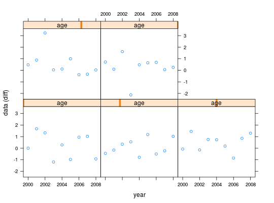

The FLQuant class is a six-dimensional array
designed to store most quantitative data used in fisheries and population
modelling.
The six dimensions are named. The name of the first dimension can be
altered by the user from its default, quant. This could typically be
age or length for data related to natural populations. The
only name not accepted is 'cohort', as data structured along cohort should
be stored using the FLCohort class instead. Other dimensions
are always names as follows: year, for the calendar year of the
datapoint; unit, for any kind of division of the population, e.g. by
sex; season, for any temporal strata shorter than year; area,
for any kind of spatial stratification; and iter, for replicates
obtained through bootstrap, simulation or Bayesian analysis.
In addition, FLQuant objects contain a units attribute, of
class character, intended to contain the units of
measurement relevant to the data.
numericThe FLQuant method provides a flexible constructor for objects of the class.
Inputs can be of class:
vector:matrix:FLQuant (NA) is returned, but dimensions and dimnames can still be specified.Additional arguments to the constructor:
character string.numeric vector of length 6.list object providing the dimnames of the array. Only those different from the default ones need to be specified.character string.# creating a new FLQuant flq <- FLQuant() flq <- FLQuant(1:10, dim=c(2,5)) summary(flq)An object of class "FLQuant" with: dim : 2 5 1 1 1 1 quant: quant units: NA Min : 1 1st Qu.: 3.25 Mean : 5.5 Median : 5.5 3rd Qu.: 7.75 Max : 10 NAs : 0 %# Vectors are used column first... dim(FLQuant(1:10))[1] 1 10 1 1 1 1# ...while matrices go row first. dim(FLQuant(matrix(1:10)))[1] 10 1 1 1 1 1FLQuant(matrix(rnorm(100), ncol=20))An object of class "FLQuant" , , unit = unique, season = all, area = unique year quant 1 2 3 4 5 6 7 8 1 -0.193077 0.808523 1.776689 -0.879835 1.491816 -2.387861 -0.430997 -0.779585 2 -0.789887 1.422803 -0.528634 0.221333 2.550888 1.175133 0.245646 -1.045862 3 0.953255 2.397928 0.043005 -0.144498 -0.835435 0.910973 -0.522455 1.781756 4 1.483796 1.676678 0.748373 1.136525 -0.692977 -0.088957 -0.845508 0.474615 5 1.716476 0.635828 -0.189834 -0.616372 0.958758 1.104567 0.200041 1.992212 year quant 9 10 11 12 13 14 15 16 1 -1.176352 -0.605976 -0.504060 0.299591 1.573704 -0.741425 1.930555 -1.471566 2 1.471149 -1.629740 1.097771 1.652797 0.894659 -1.367346 1.024711 0.050265 3 0.027542 -0.091052 0.483610 -0.856852 0.502862 -1.877764 -0.202101 -0.929957 4 -0.653855 1.259116 -0.110912 -0.908127 0.315109 -2.639858 -0.590188 -0.850451 5 -0.443513 0.065094 -2.055643 -1.148258 0.098207 -0.199915 1.624259 0.198655 year quant 17 18 19 20 1 0.295184 -0.913577 0.572872 -1.594092 2 0.136552 0.158842 -0.993286 1.351062 3 -0.459295 0.048640 1.709797 -0.910843 4 0.417849 0.301072 0.566220 0.910330 5 -0.263771 -0.497358 1.279704 0.771807 units: NAFLQuant(array(rnorm(100), dim=c(5,2,1,1,1,10)))An object of class "FLQuant" iters: 10 , , unit = unique, season = all, area = unique year quant 1 2 1 -0.209686(0.661) -0.356273(0.967) 2 -0.383048(0.755) -0.214819(1.257) 3 0.105614(0.626) -0.025347(0.511) 4 0.223727(0.953) -0.048410(1.197) 5 -0.131538(0.579) 0.220701(1.402) units: NAFLQuant(array(rnorm(100), dim=c(5,2)), iter=10)An object of class "FLQuant" iters: 10 , , unit = unique, season = all, area = unique year quant 1 2 1 0.40059(0) -1.99041(0) 2 -1.17527(0) 0.45798(0) 3 -0.23489(0) 1.08558(0) 4 -0.28835(0) -0.69939(0) 5 2.15177(0) -0.20301(0) units: NA# working with FLQuant objects flq <- FLQuant(rnorm(200), dimnames=list(age=1:5, year=2000:2008), units='diff') summary(flq)An object of class "FLQuant" with: dim : 5 9 1 1 1 1 quant: age units: diff Min : -2.779 1st Qu.: -1.042 Mean : -0.2097 Median : -0.2842 3rd Qu.: 0.6462 Max : 1.949 NAs : 0 %flq[1,]An object of class "FLQuant" , , unit = unique, season = all, area = unique year age 2000 2001 2002 2003 2004 2005 2006 2007 2008 1 0.24365 -0.81221 -0.32551 -1.98002 -0.54585 0.90292 0.99979 -1.84078 -0.39284 units: diffflq[,1]An object of class "FLQuant" , , unit = unique, season = all, area = unique year age 2000 1 0.243655 2 0.052621 3 -1.067078 4 -1.085301 5 -0.284178 units: diffflq[1,1] <- 0 units(flq)[1] "diff"quant(flq)[1] "age"plot(flq)
FLQuant